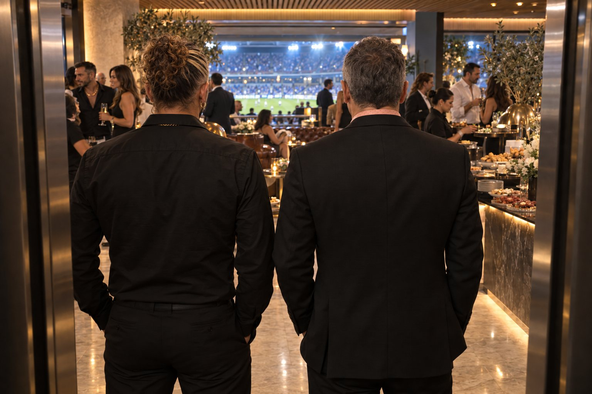
לפני שריקת הפתיחה
אל תתקוף.
דלתות המעלית נפתחות. חזי שם את חיוך המיליון דולר שלו. ליורם יש הוראה אחת: לא לדבר עסקים עם אסי. בכלל.
לא נכון. נסו שוב.
בכיכובם של ציון ברוך ויובל סמו
יוצר ותסריטאי: אורי כץ
בזמן שעל הדשא רודפים אחרי הכדור,
בקומה למעלה רודפים אחרי כוח.
ה־BOX היא דרמה קומית מהירה וחדה שמתרחשת כולה בקומת תאי ה־VIP של אצטדיון כדורגל. האחים אוזן, חזי ויורם, הם יזמי נדל״ן אמביציוזים ששוכרים בוקס כדי לפרוץ לליגה של הגדולים. כל משחק הופך לשדה קרב של דילים, אגו, קשרים והזדמנויות.
תא פרטי, המכונה בוקס, הוא למעשה סלון יוקרתי שמושכר לאדם או לבית עסק לעונה שלמה. ספות, בר, מסך ענק, ומרפסת פרטית מול המגרש.
לא קל לזכות בבוקס. רשימת ההמתנה ארוכה עד בלתי אפשרית, כי הבוקס הוא לא סתם מקום לראות בו כדורגל. בעל התא מקבל סלון יוקרתי, בר פרטי ומשרד לא רשמי, שבו נסגרים הדילים הגדולים של המשק.
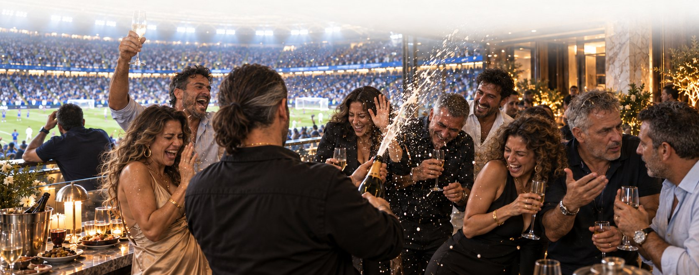
הכדורגל הוא רק תפאורה.
כאן השמפניה נשפכת בזמן שצורחים על הקוון, אימפריות נדל״ן נבנות בין סושי לקינוחים, וכולם מנסים להיראות חשובים מספיק כדי להיות שם.
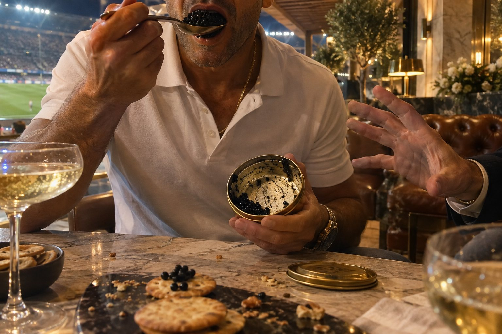
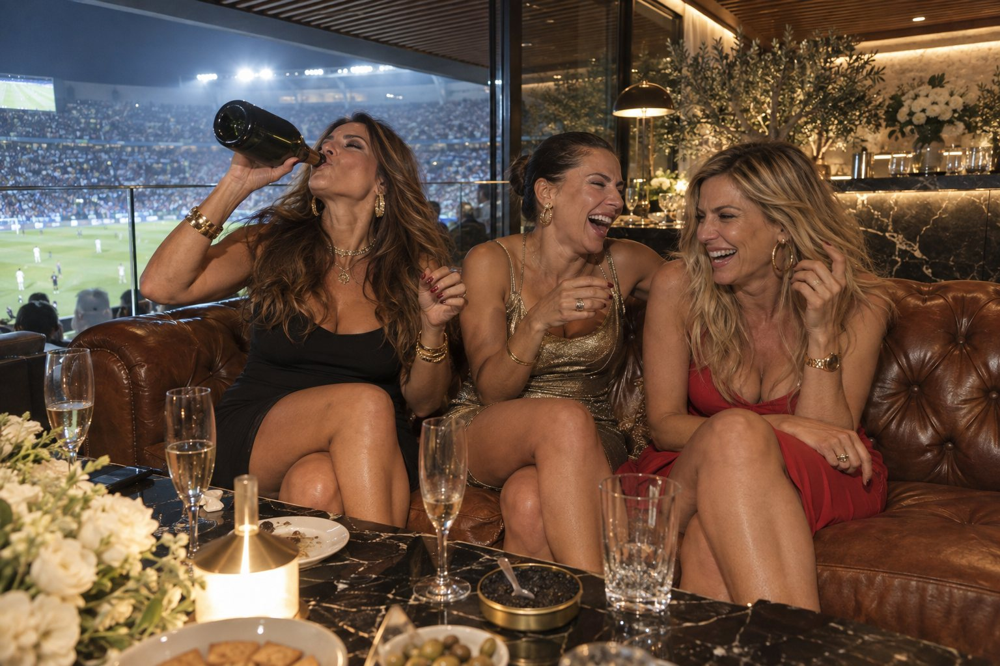
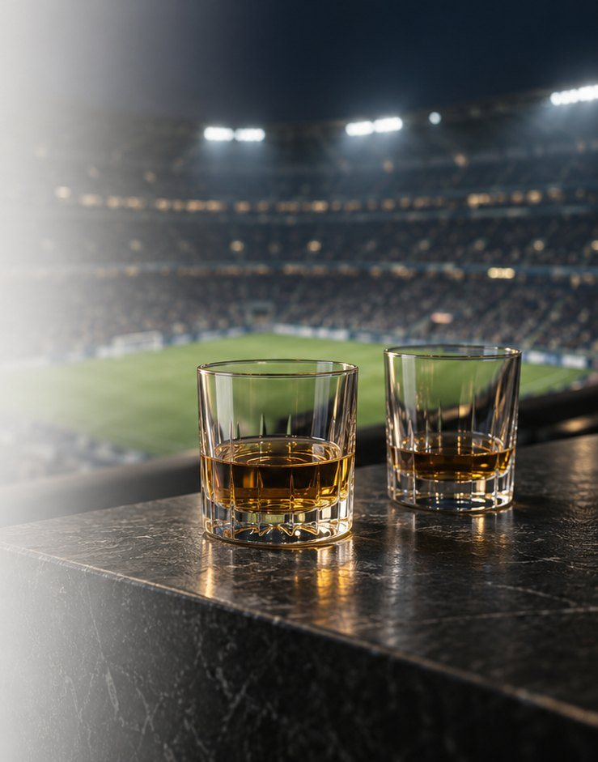
”מה שאומרים בבוקס,
נשאר בבוקס.
שני אחים. בוקס אחד. אפס כסף לבזבז.
איש עסקים מצליח, יזם נדל״ן שלא בוחל גם בטקסטיל ובפיננסים. נשוי־פרוד לשגית, שבטוחה שהפרידה זמנית, ובמערכת יחסים עם ליאור, שחקנית ופליטת ריאליטי שמוסיפה לחייו נוכחות, רעש ותמונות לאינסטגרם.
היפראקטיבי שלא מפסיק לרגע: בוחש, מחבר, לוחץ, סוגר. בתחרות עם כולם, תמיד, ונחוש להוכיח לכל מי שזלזל בו שהוא לא רק מוצלח, אלא מנצח. לחזי תמיד יש אינטרס, גלוי או נסתר.
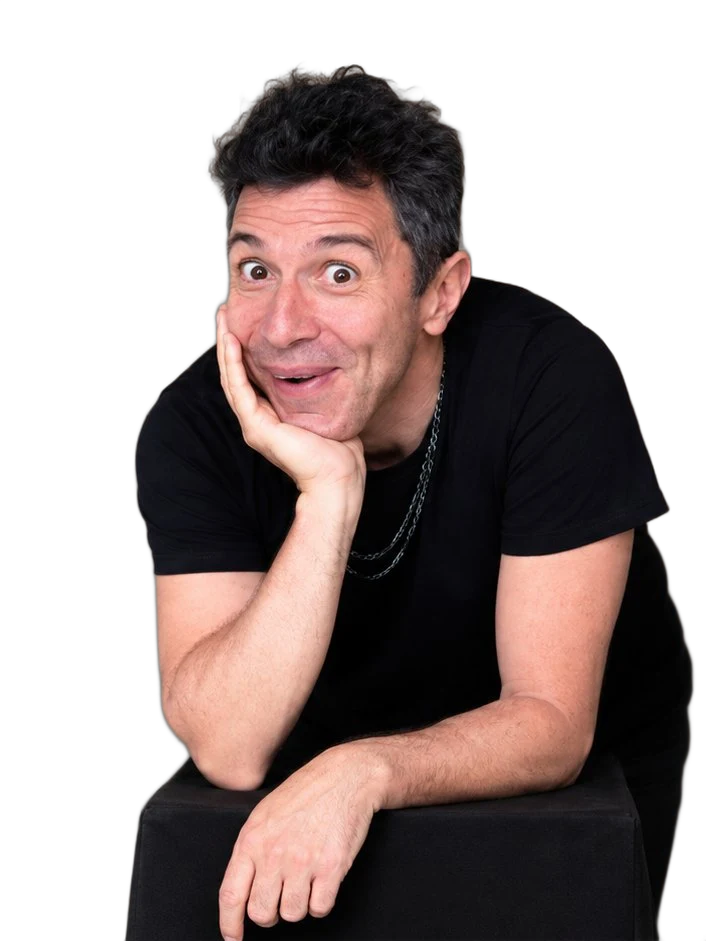
האח הגדול, השותף ואיש הכספים והאקסל. נשוי לדרורית ואב לשניים. תמיד התרחק ממסיבות ומפזרנות, אבל הבוקס והמפגש עם הנוצץ פתחו לו את הצ׳אקרות.
עדיין נושא את הטראומה של פשיטת הרגל של אבא. מבקר את ההרפתקנות של חזי, ובסתר מעריץ את התעוזה שלו. ממולח ומחושב, אבל לא ממש מבין את העולם של הכרישים הגדולים.
יורם מוריד את חזי לקרקע כשצריך. חזי, כמובן, לא רואה את זה ככה. ומתחת לפני השטח, יורם הוא אדם תחרותי שרק מחכה להזדמנות להתפוצץ.
חזי שכנע את יורם להשקיע כמעט חצי מיליון שקל בבוקס. המינגלינג, הוא הבטיח, יביא את העסקאות.
הם זכו במכרז לפרויקט דירות בשדה דב, ועכשיו מתקשים לממש את הזכויות. כל יום שעובר צובר עוד חובות וריביות.
משחק אחרי משחק, הבוקס הופך מסמל סטטוס לכלי הישרדות. ויורם, שלא מבין כלום בכדורגל, נשאב לעולם הזוהר.
לקראת סוף העונה חזי מנסה לקנות את הקבוצה, מאחורי הגב של יורם. יורם מוכר מכרז אחר במחיר הפסד, בלי לספר לחזי.
האם האחים אוזן יאבדו רק את הבוקס, או גם את השותפות ביניהם?
כל פרק מתרחש בזמן אמת, במהלך משחק כדורגל אחד. בזמן שהמשחק מתקדם על הדשא, בבוקס מתנהל משחק אחר. האורחים לא יודעים שהם חלק ממנו, ולחלקם יש תוכנית משלהם.
זמן אמת. כאן ועכשיו. הכול חי, צפוף, ולפעמים על סף איבוד שליטה.
קצב, מצלמה שמשוטטת בחופשיות בין התאים, והופעות של סלבס בגרסה בדיונית של עצמם.
חמישה וואן־שוטים. המצלמה לא עוצרת.
בכל שבוע חזי ויורם מארחים בבוקס
לכאורה, חבורה אקראית שבאה לראות משחק. בפועל, כל אחד הוזמן מסיבה אחרת. האחים מחברים בין אנשים, מקדמים עסקאות, פותרים בעיות ומנסים להרשים את מי שצריך.
כמו ב־The Studio, בכל פרק מגיעים לקומה אנשי ציבור מוכרים, בגרסאות בדיוניות של עצמם. אגדות כדורגל, זמרים, קומיקאים, שפים, אנשי עסקים וסלבס, כחלק טבעי מהעולם של התאים. הבוקס הוא התירוץ המושלם להביא אותם.
ועוד רבים. כל פרק, אורח אחר.
לחזי וליורם יש מטרה אחת הערב: להפשיר קרקע חקלאית שבבעלותם לבנייה מסחרית, לפני שהחובות קוברים אותם. אורח הכבוד: אסי חלפון, סגן ראש העיר וחבר ועדת התכנון.

דלתות המעלית נפתחות. חזי שם את חיוך המיליון דולר שלו. ליורם יש הוראה אחת: לא לדבר עסקים עם אסי. בכלל.
על המרפסת חזי מרחרח את הכיוון. אבל זו שנת בחירות, ואסי צריך להיות, כמו שאומרים, ללא רבב. יורם כבר הספיק לשאול אותו מתי הוועדה מתכנסת.
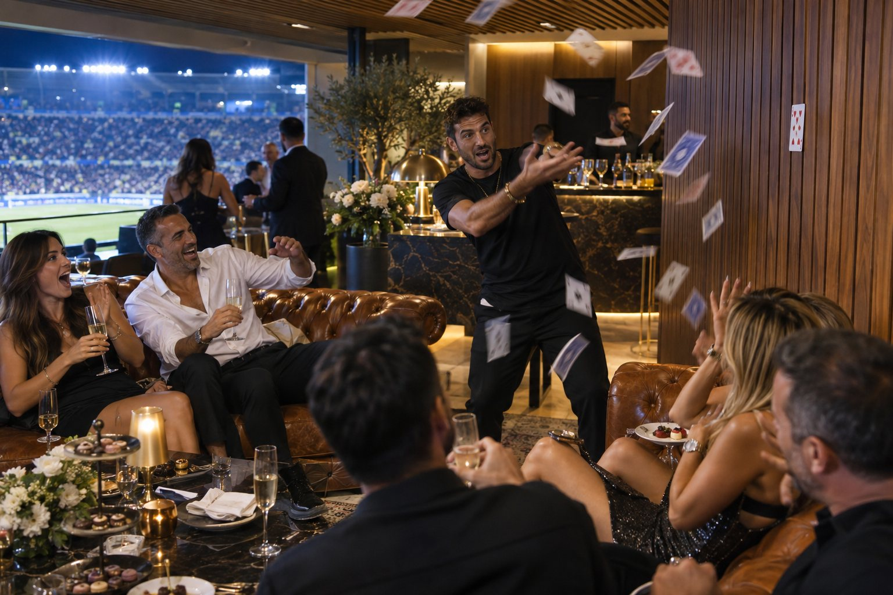
מנטליסט, שמפניה של האוליגרך מהתא הסמוך וקוויאר שנאכל בכפית כמו פירה. הכול נרשם על האחים. יורם סופר כל שקל.
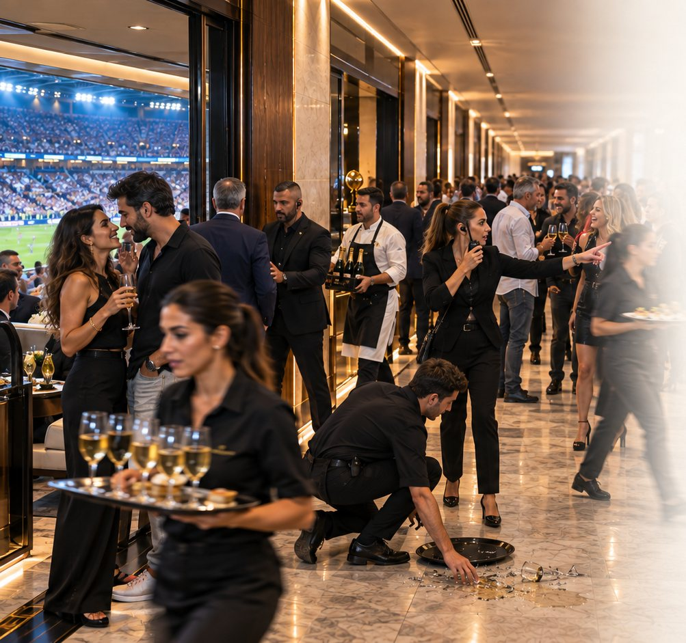
ואז חזי מגלה שלאסי יש עבר עם מאי, המארחת של הבוקס. אשתו של אסי יושבת במרחק שני מטרים. חזי מבהיר לאסי שהסוד שלו בטוח, כל עוד האחים יקבלו את מה שהם צריכים.
אסי נותן את המילה שלו. האחים חוגגים. ובמקביל חזי ״מוכר״ את הבוקס הריק שליד לסוחר מרצדס, בתמורה לרכב חדש. בוקס שאין לו שום זכות למכור.
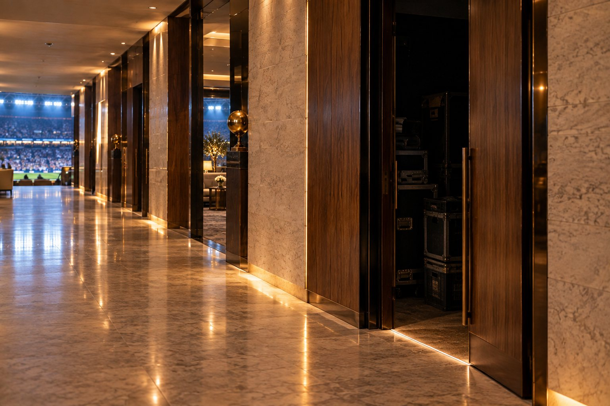
האצטדיון מתפוצץ. הסוחר רוצה לראות את הנכס. יורם מוביל את כל האורחים לבוקס החשוך ופותח את הדלת. בפנים: אסי, עם המכנסיים למטה. ומאי. כולם רואים. כולל אשתו.
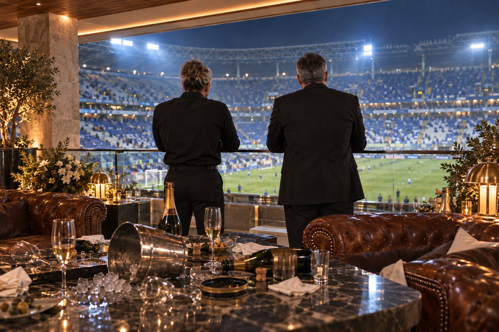
האחים אוזן הפסידו הכול. הקרקע לא תופשר. ויורם, מסתבר, כבר הספיק להחתים את הקבלן.
”בקומה שלי כולם מנצחים.רונה, אחראית הקומה
גם כשמפסידים.
הפרודה של חזי. בטוחה שהפרידה זמנית ושהוא יחזור אליה.
בת הזוג של חזי. שחקנית ופליטת ריאליטי. רוצה את השמפניה של הביוקר.
המארחת של הבוקס. אם מישהו יודע מי שווה ומי שווה יותר, זו מאי.
סמנכ״לית הקבוצה ואחראית הקומה. מחליטה מי מקבל בוקס, ומתי.
האוליגרך הרוסי מהתא הסמוך. לאחים אוזן יש איתו ביף אישי ותחרות סמויה של שופוני.
המארחת של רומן. מבינה את חוקי המשחק, ומשחקת אותם קר יותר.
המאבטח. תמיד חצי צעד אחרי האירוע, ואיכשהו תמיד קרוב.
אשתו של יורם. ״איפה שצריך להיות קשה אתה רך, ואיפה שצריך רך אתה קשה.״
אורח שהאחים צריכים ממנו השקעה מגיב לכל מהלך במשחק. כל כמעט־גול מפיל את העסקה, כל מהפך מחזיר אותה לחיים. חזי מנסה לתזמן את החתימה לרגע הנכון.
חזי ויורם הזמינו, בלי לדעת, שני אויבים מושבעים. הם עושים שמיניות באוויר כדי שלא ייפגשו. בסוף הם נפגשים, וסוגרים עסקה ביניהם. בלי האחים.
ליאור הפכה את הבוקס לקרקס של משפיענים, צלמים ולייבים, בדיוק כשחזי צריך לסגור עסקה שאסור שתיחשף.
שופט לשעבר, שהיה מעורב בפרשת הטיית משחקים, מגיע כאורח. יש לו גישה להון לא מדווח. ובקומה מתחילות לרוץ שמועות.
שף מפורסם בבוקס של האחים, ובתא השכן יושב מבקר המסעדות שהרס לו את הקריירה. השף רוצה נקמה. חזי מבין שזה עלול להתפוצץ לו בפנים.
בניגוד לנהלים, יורם מארגן בבוקס בר מצווה לבן שלו. להסתיר את זה מרונה? עם רב ודודות?
באולפן נבנה סט אחד רציף: תאי ה־VIP, המסדרון, הלאונג׳, המטבח והמרפסות. כל החללים מחוברים, כך שהמצלמה עוברת ביניהם ברצף, ונשארת כל הזמן בתוך ההתרחשות.
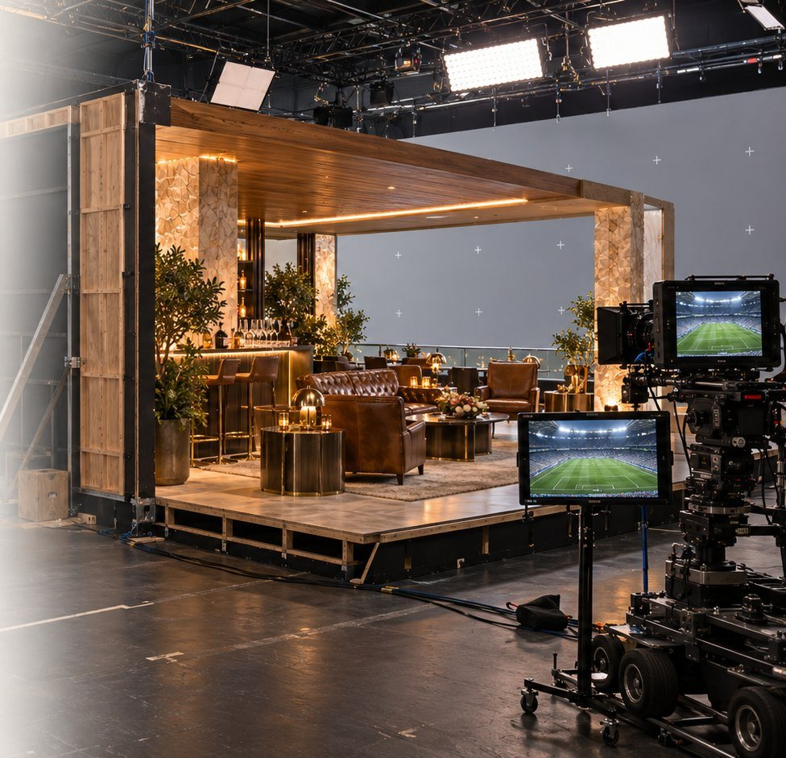
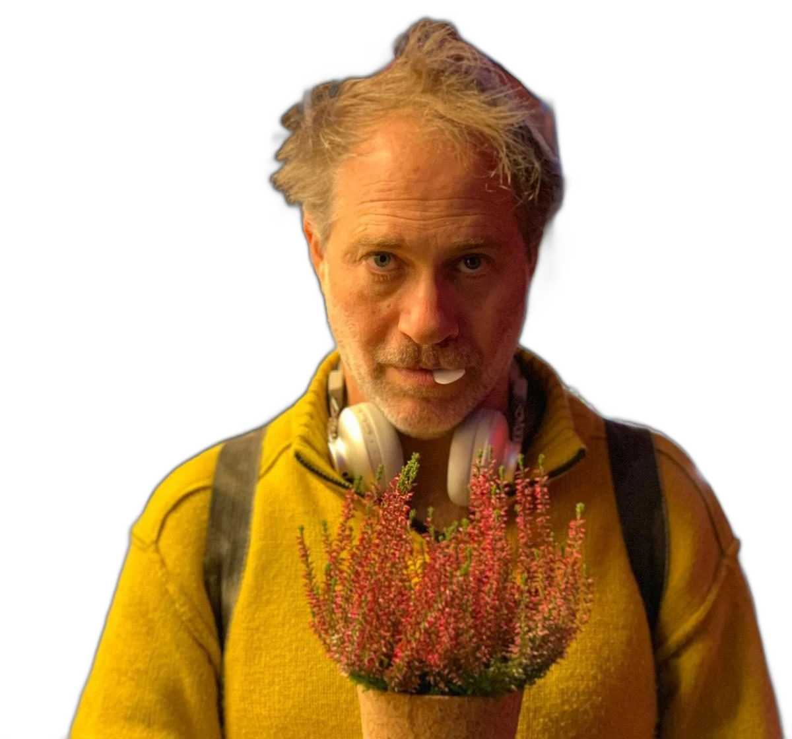
האיש מאחורי ״לשחרר את שולי״ 1 ו־2.
דרמה קומית | 12 × 35׳
חומר חסוי, להצגה בלבד.